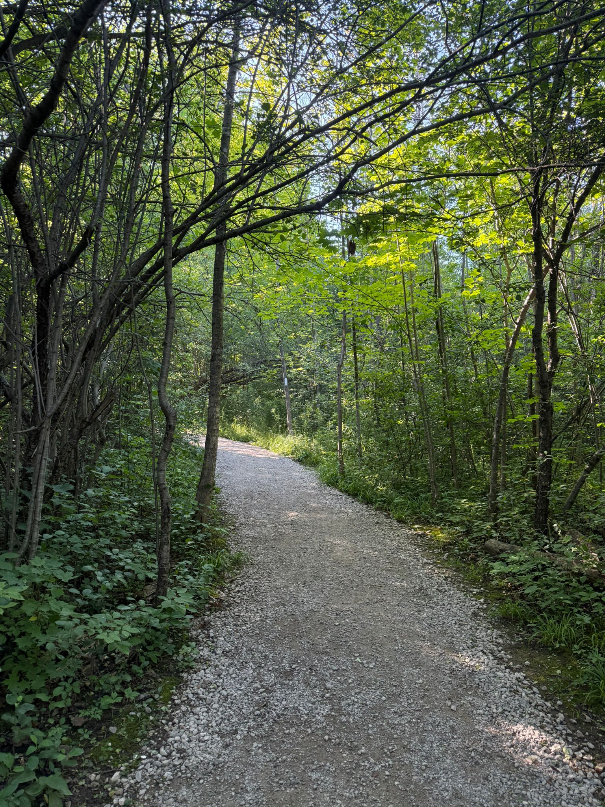
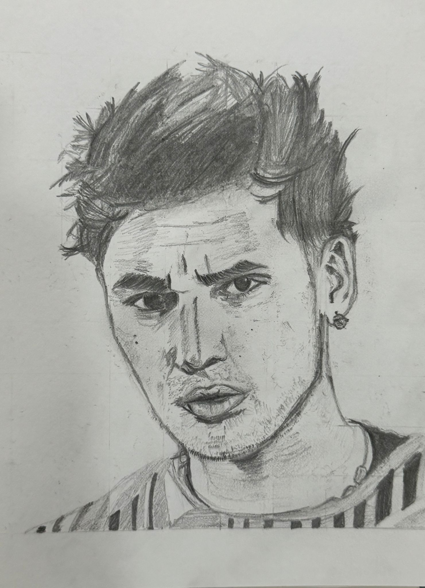
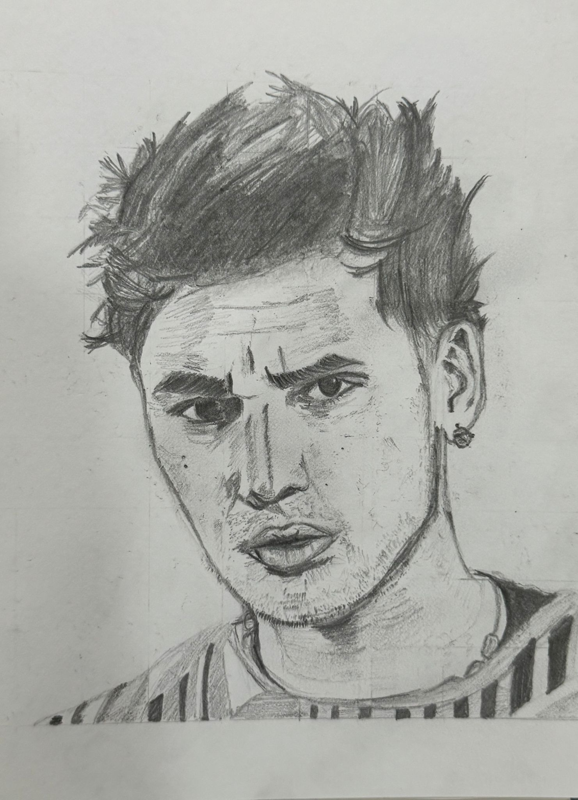

My Portfolio
Photography
Photography has always been a way for me to capture the world through my eyes. Whether it's nature, architecture, or everyday life, I love freezing moments that tell a story. Below are some of my favorite shots I've taken.


Cooking
I find joy in the kitchen, where I turn simple ingredients into something delicious. These photos are just a small sample of my cooking adventures.
Drawing
Art has always been a peaceful escape for me. Through drawing, I explore new ideas, express feelings, and just enjoy the simple joy of creating something from scratch.
 
